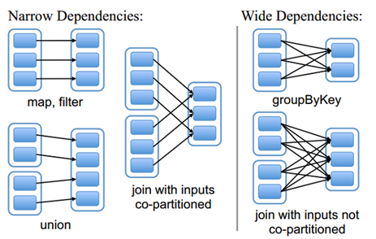
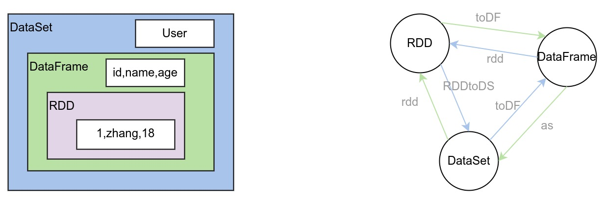
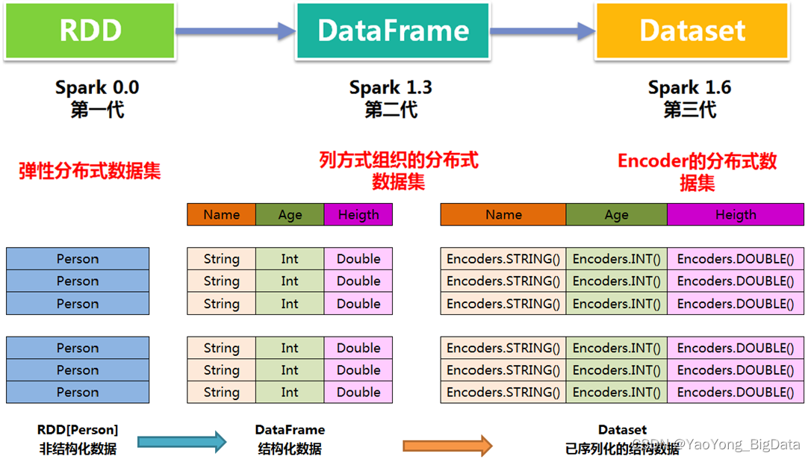

Ch05-Spark 之数据抽象
May 20, 2019
Spark 并不直接对数据进行处理，而是将数据抽象成了分布式数据集这种数据结构。目前该数据结构主要经历了三代变迁。
1. RDD #
RDD（Resilient Distributed Dataset）叫做弹性分布式数据集，是 Spark 中最基本的数据抽象，它代表一个不可变、可分区、里面的元素可并行计算的集合。 RDD 算子按照返回是否是 RDD 可以分为 Transformation 算子（返回 RDD）和 Action 算子（不返回 RDD）。因此 RDD 与 RDD 之间的依赖只会存在于 Transformation 算子中。
| 分类 | 说明 |
|---|---|
| 窄依赖 | 每个父 RDD 的一个 Partition 最多被子 RDD 的一个 Partition 所使用，例如 map、filter、union 等操作都会产生窄依赖（多对一）。 |
| 宽依赖 | 一个父 RDD 的 Partition 会被多个子 RDD 的 Partition 所使用，例如 groupByKey、reduceByKey、sortByKey 等操作都 |

2. DataFrame #
DataFrame 是 DataSet 的一个特例 type DataFrame = DataSet[Row]，相比较 RDD 而言额外提供了 Schema 等信息。DataFrame 每一行的类型固定为 Row, 每一列的值没法直接访问，只有通过解析才能获取各个字段的值。
3. DataSet #
Dataset 是 DataFrame API 的扩展，它提供了类型安全 (type-safe)，面向对象 (object-oriented) 的编程接口。Dataset 利用 Catalyst optimizer 可以让用户通过类似于 sql 的表达式对数据进行查询。
4. 数据抽象的区别 #

